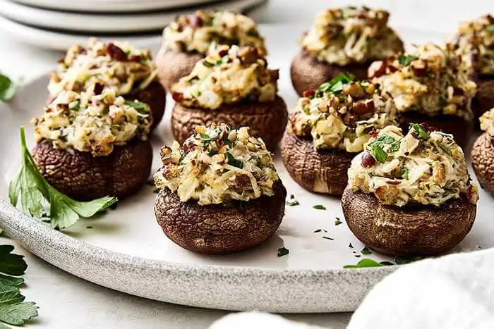

Happy Hour Mushrooms

Description
These mushrooms are great for entertaining
Ingredients
- 10 medium mushrooms
- 6 tbs butter, softened
- 1 clove garlic, minced
- 4 oz jack cheese, shredded (about 1/2 cup or more, depending on how cheesy you wanna be wit it)
- 2-3 tbs, white wine (and a glug or two for you, chef)
- 1 tsp soy sauce
- 1/3 cup cracker crumbs
Steps
- 1. Brush mushrooms with melted butter.
- 2. Mix cheese, reserved butter, and garlic. Stir.
- 3. Stir in wine and cracker crumbs.
- 4. Fill mushrooms, pressing lightly.
- 5. Broil 6 " from heat until lightly browned.
Serve warm.
Optional final touches: garnish with fresh parsley, chives or thyme. Drizzle with balsamic glaze.
A note from FC: The original recipe that my mom wrote didn't mention it, but you should remove the stems from the mushrooms to make room for the suffing. Feel free to dice up the stems and incorporate them in the stuffing.